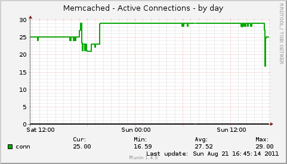
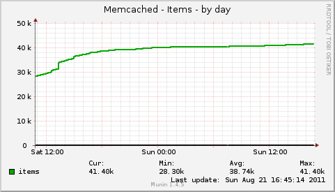
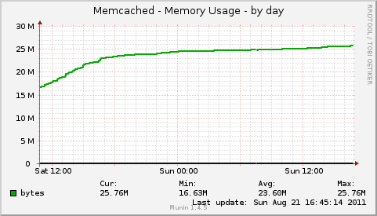
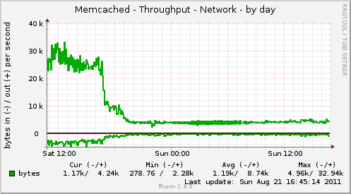
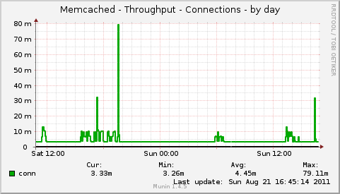
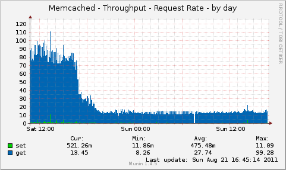
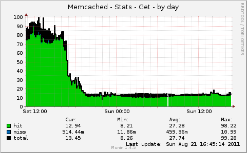
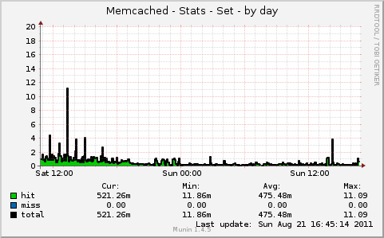
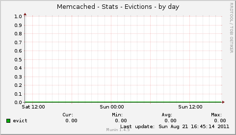
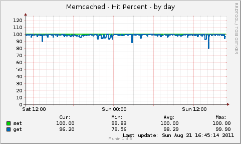

The multigraph plugin implements the following graphs:
Sample graphs from Memcached version 1.2. (More detailed metrics are available in newer versions of Memcached Server:
|  |  |
|  |  |
|  |  |
|  |  |
|  |  |
| Variable | Description |
|---|---|
| host | Memcached Server IP. (127.0.0.1 by default.) |
| port | Memcached Server Port (11211 by default.) |
| include_graphs | Comma separated list of enabled graphs. (All graphs enabled by default.) |
| exclude_graphs | Comma separated list of disabled graphs. |